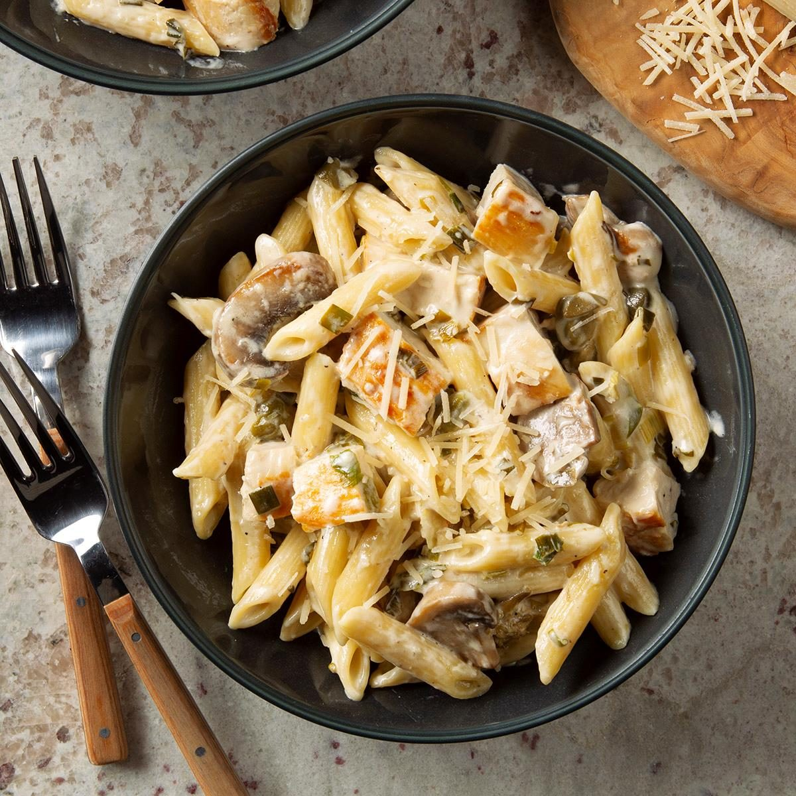

Description
Insert life story here...
Ingredients
- 2 cups uncooked penne pasta
- 2 cups sliced fresh mushrooms
- 2 tablespoons butter
- 1/2 cup chicken broth
- 1 teaspoon minced garlic
- 1 tablespoon all-purpose flour
- 1/3 cup water
- 1 cup heavy whipping cream
- 2 cups cubed cooked chicken
- 1/4 teaspoon salt
- 1/8 teaspoon pepper
- Shredded Parmesan cheese
Steps
- Cook pasta according to package directions. Meanwhile, in a large skillet, saute mushrooms and onions in butter for 4-5 minutes or until tender. Add wine or broth and garlic. Bring to a boil; cook until liquid is reduced by half, about 5 minutes.
- Combine flour and water until smooth; gradually add to mushroom mixture. Bring to a boil. Reduce heat; cook and stir for 2 minutes or until thickened. Stir in cream. Bring to a boil. Reduce heat; simmer, uncovered, for 4-5 minutes or until heated through.
- Drain pasta. Add the pasta, chicken, capers, salt and pepper to cream sauce. Cook for 3-4 minutes or until heated through. Sprinkle with Parmesan cheese.